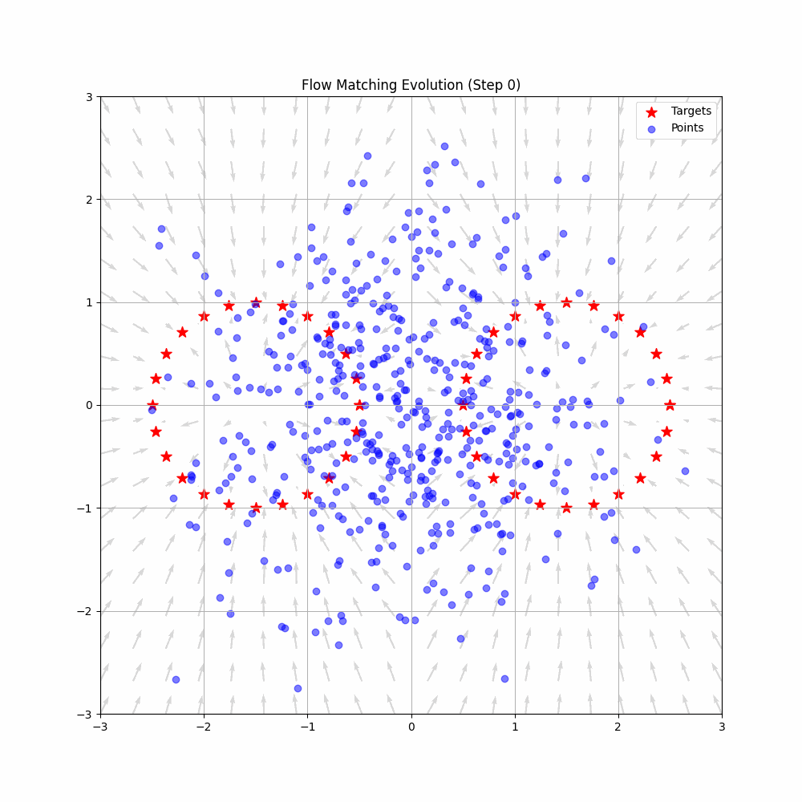
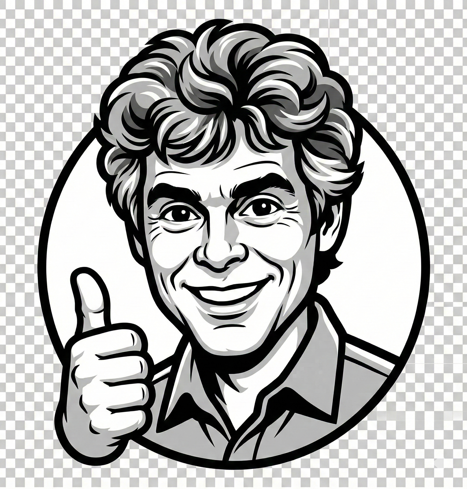
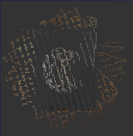

|
Tianli Qu
I'm a student at Boston College studying Mathematics and Computer Science (graduating May 2026). I am broadly interested in machine learning, computer vision and mathematics.
Email /
LinkedIn /
GitHub /
Resume
|
|
|

|
Neural Network Architectures Satisfying Geometric Constraints
Tianli Qu,
Kian Rosenblum,
Arushi Katyal,
Grady Ma
NeurIPS Workshop, 2025
Developed neural network architectures that provably enforce geometric constraints, with applications to constrained machine learning and flow-matching algorithms on geometric spaces.
Advised by Professor Rishi Sonthalia
|
|
|
AI Foul Detection
2025
Built a computer-vision model to automatically detect fouls from game footage using deep learning.
|
|

|
LectureToLatex
2025
A ReactJS application with an OpenCV OCR pipeline that transcribes, summarizes, and explains handwritten blackboard content. Deployed cross-platform with Expo.
|
|

|
LiDAR Volume Estimation
2024
Implemented a volume-estimation method derived from exterior products and determinants. Processed LiDAR point-cloud data and generated Delaunay triangulation meshes in Python using Open3D, SciPy, and NumPy.
|
|
|
Indoor Visible-Light Positioning System
2023–2024 · Boston College Engineering
Built a low-cost indoor positioning system using consumer-grade lightbulbs and an autonomous ROS2 robot. Developed ML models to predict mm-wave (60 GHz) signal blockage for low-latency 5 GHz / 60 GHz band switching.
|
|
{kind=link}